Time Freeze
Designing and measuring the effectiveness of hand-gesture inputs for a web game
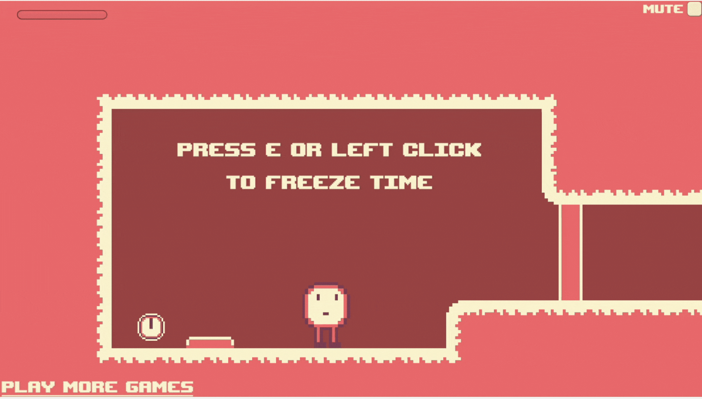
Overview
Time Freeze is a 2D puzzle-platformer that balances precision and problem-solving. Its signature mechanic—the ability to freeze time—makes for intricate gameplay that depends on split-second control.
Our challenge: to replace traditional keyboard inputs with hand-gesture controls using a webcam-based recognition system.
What seemed straightforward quickly became a deep exploration of ergonomics, cognitive load, and gesture intuitiveness. The entire process was far from perfect. But it quickly became an unexpectedly complex UX journey full of physical, cognitive, and technical obstacles. This case study documents our nonlinear process.
Research
Analyzing the Artifact
The existing keyboard inputs for Time Freeze are shown below. In addition, the player can press 'e' to freeze time, meaning moveable objects are frozen, while the player can move around.
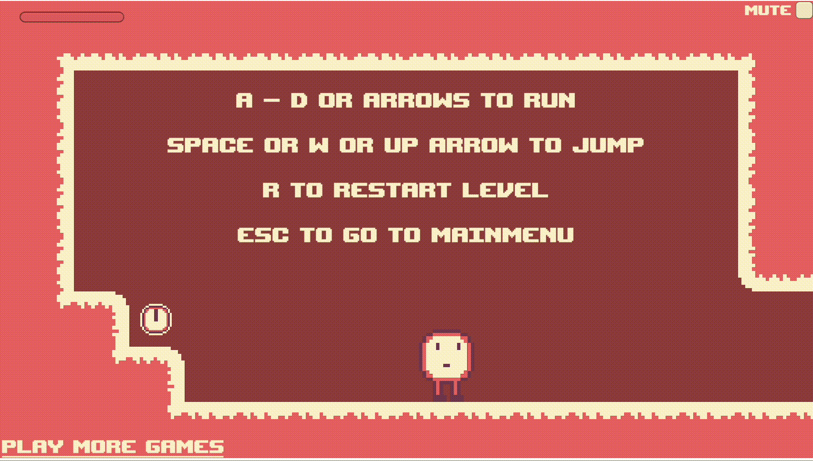
The platformer aspect of this game added an extra challenge. We would need hand gestures that could easily be combined together (in order to jump while moving laterally). In order to time jumps properly, these controls had to also be responsive.
What Makes a "Good" Hand Gesture?
3D gesture controls have been around for a while, originally starting in the 80s with video game controllers like the Nintendo Power Glove, then the 2010s with Xbox Kinect, and in previous years appearing in VR environments, like the Apple Vision Pro.
Due to these developments in VR and XR (extended reality), hand gestures have become quite popular, and thus increasingly more research is being done on the ergonomics and design of hand gestures.
In The Design of Hand Gestures for Human-Computer Interaction: Lessons from Sign Language Interpreters, researchers worked with sign language interpreters to map out which hand positions were less physically demanding for individuals.
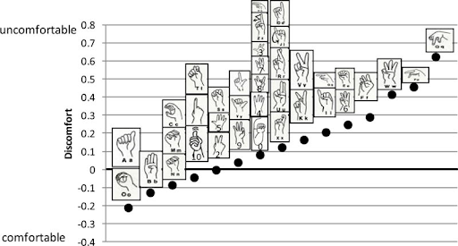
Rank order of 37 alphanumeric characters by mean discomfort
It can be seen that most gestures with fingers spread out and extended, or gestures involving the ring and pinky fingers extended, ranked higher on discomfort. Close fist gestures with pointer or index fingers extended were generally more comfortable.
The wrist movement was also quite interesting. It appears that swiveling/rotating of the wrist was generally comfortable, yet flexion too much in either direction caused discomfort.
Design Principles that Guided Us
Fitt's Law states that how quickly a person moves to a target depends on the target's size and distance. While this often describes visual design, we can re-phrase this law to help our case: hand gestures that require a lot of rotation, or extended fingers, should be reserved for less frequently used controls.
Don Norman's concept of mapping is also insightful—if possible, hand gestures should match their real-world meaning. For instance, an open palm held up often indicates stopping—potentially making a good hand gesture for our "freeze" control.
Ideation
Based on our research and technical limitations, we came up with four separate control schemes.
Scheme 1: Two-Handed Mapping
The user holds up either hand, based on which direction they would like to travel in, and:
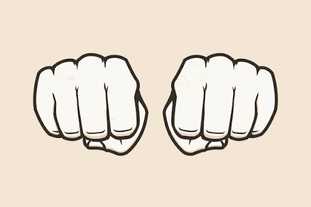
- Lateral movement — closed fist
- Jump — thumb extended upwards
- Freeze time — open palm
Benefit: Easier to combine lateral movement and jumping. Overall, there is less finger movement, thus less potential hand strain and fatigue.
Cons: Without a pointing gesture, the gesture with a closed fist may not feel as intuitive, or suggestive of movement.
Scheme 2: One-Handed Control w/ Wrist Rotation
With one hand, the user holds their fist up, palm facing camera, and:
- Lateral movement — extend thumb (sideways thumbs up) and rotate wrist to switch directions
- Jump — extend pointer finger
- Freeze time — open palm
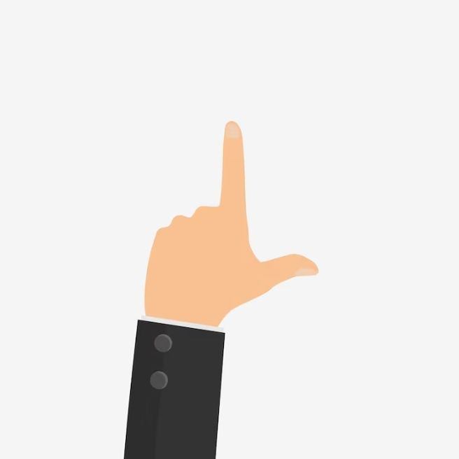
Benefit: Pointing with the thumb feels more directional than using two hands for movement. The pointer finger is a natural indicator for upward movement, and combines well with the thumb, without any additional strain.
Cons: We worried about excessive wrist rotation after extended periods of time.
Scheme 3: Finger-based, No Wrist Rotation
Another single hand scheme we explored was one without wrist rotation. The user simply holds their fist up, palm facing the camera, and:
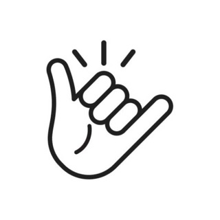
- Lateral movement — extend pinky or thumb
- Jump — extend pointer finger
- Freeze time — open palm
Benefit: No risk of wrist irritation, the wrist is left neutral at all times.
Cons: Full extension of the pinky finger was difficult, if not impossible, and potentially would not be recognized by the camera. In addition, the pinky and thumb were being used with equal importance here, which didn't match the inherent mismatch in each finger's flexibility
Scheme 4: Swiping Gestures
In this scheme, the user simply swipes or pushes their hand in the direction they would like to move the character.
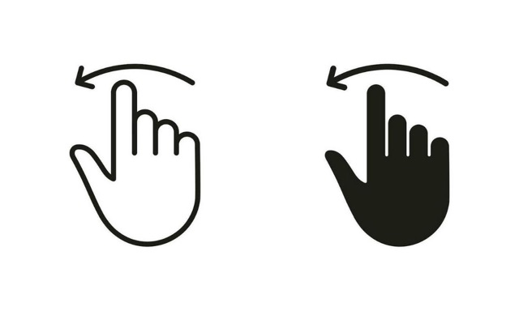
Benefit: The large benefit of swiping is that it exists in other interfaces. Yes, in VR with Apple Vision Pro, in certain car interfaces for music playback, but more commonly, on touchscreens. Users map physical movement to movement on the screen.
Cons: However, this movement has limitations in a video game, and raises a lot of questions. For instance, how far should one "swipe" move the character? Combining jumping and lateral movement would also be difficult.
"Wizard of Oz" Testing
Before coding a full system, we used a Wizard of Oz approach. While users made gestures, we manually triggered corresponding keyboard inputs. This helped us evaluate the usability of each gesture scheme without the noise of technical issues.
We had 4 users try out each of the first three schemes by playing through 2 levels of Time Freeze.
Results: Both scheme 1 (two-handed) and scheme 2 (one-handed with wrist rotation) worked quite well. As anticipated, users found the third scheme quite strenuous, due to the need to extend the pinky. We proceeded with implementing the first scheme, as users seemed to have more control—changing directions felt much more fluid.
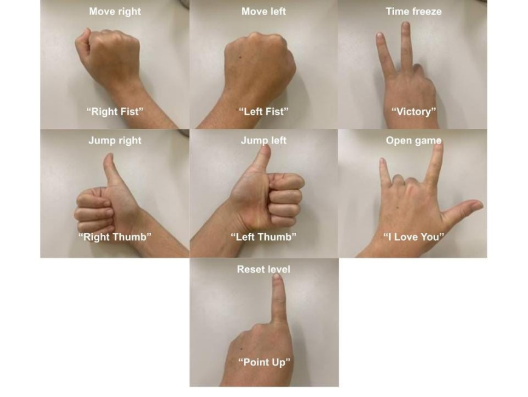
User Testing
Our initial evaluation was between the keyboard and hand gestures controls—measuring both the performance and cognitive load, or user satisfaction.
Methods
We evaluated the keyboard and gesture input schemes with 6 participants, all of whom were students in our human-computer interaction class.
- Pre-test questionnaire
- What is your experience with gesture-based technology?
- What is your experience with playing online computer games and/or video games?
- Give participants 2 minutes to familiarize themselves with the keyboard controls
- Participants play through 3 levels of Time Freeze with the keyboard controls
- Post-task questionnaire - participants will complete the NASA-TLX questionnaire to provide ratings from a scale of 1–10 across various dimensions of cognitive workload (mental, physical, and temporal demands, performance, effort, and frustration)
- Repeat steps 2-4, with the hand-gesture controls
- Follow-up interviews with the following questions:
- Describe your overall experience with utilizing the keys/gestures to complete game levels.
- Did you feel as though there were gestures that were more easily understood than others?
- How would you describe your feelings of comfort and engagement with the keys? The gestures?
- Did you prefer using the keys or the gestures? Which one did you find more comfortable?
- Did you experience more strain, exhaustion, or discomfort with the gesture scheme? What about arm and/or body fatigue?
Quantitative Evaluation
Our quantitative evaluation measured two dimensions: performance and workload. We recorded the time it took to complete each level with both control schemes. After each round, they completed the NASA-TLX questionnaire to rate their experience across six subscales: mental, physical, temporal, performance, effort, and frustration.
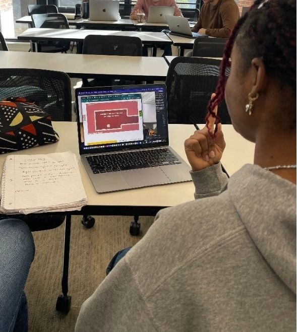
User playing through the first level
The NASA-TLX evaluates perceived workload across six subscales (each factor is rated on a scale from 1 to 10):
- Mental Demand — How much cognitive effort the task required.
- Physical Demand — How much physical activity or strain was involved
- Temporal Demand — How hurried or rushed the participant felt.
- Performance — How successful the participant felt in completing the task.
- Effort — The overall amount of work required to achieve the performance level.
- Frustration — How insecure, irritated, or stressed the participant felt.
A higher score indicates higher perceived workload. Thus, lower NASA-TLX averages reflected a more comfortable experience.
When we began planning our evaluation, our instinct was to use the System Usability Scale (SUS)—the industry-standard ten-item survey for measuring perceived usability. However, the SUS produces only a single composite score.
Unlike many traditional UIs, gesture control engages both mental and physical effort. A user might understand the gesture mapping perfectly (low mental demand) yet still experience fatigue (high physical demand).
Note
Rather than using a weighted average of the raw ratings of the NASA sub-scales (which involves pairwise rankings and more questions on the user's end), we simply analyzed the raw ratings and used an average on the ratings for comparisons between gesture schemes.
Results
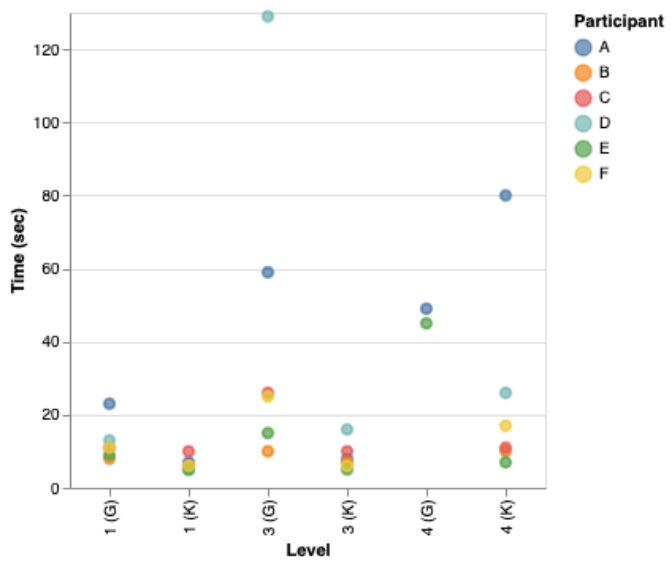
We used Altair, a python library, for data visualization. Since skill level varied greatly among participants, we created a graph displaying individual times, rather than averaging times together. As you can see, for all participants, in all levels, gesture inputs proved far slower than keyboard inputs.
When we first saw this, we grew quite concerned. Well…even though gestures were slower, maybe users found them less demanding?
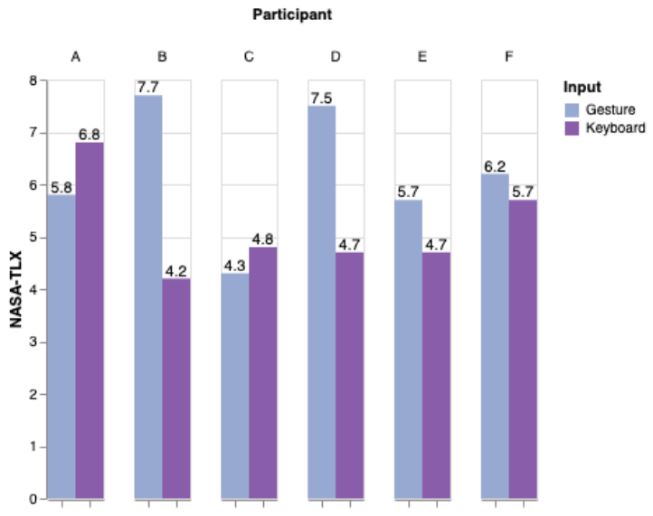
NASA-TLX scores of 6 participants
Nope. NASA-TLX scores were consistently higher for hand gestures—meaning the vast majority of participants found gesture inputs more demanding and frustrating. The only large exception was a participant who was particularly accustomed to video game controls—and their video game knowledge most likely helped them adapt to the hand gestures more quickly.
So why were our results so disappointing?
Through observation, we noticed that many participants struggled with the platforming aspect of the game. They found themselves needing to tediously shift left and right before making a leap to the next platform—the two-hand gesture scheme was somewhat inconvenient for this, as they had to bring one hand completely out of frame to prevent themselves from overshooting—there was no resting hand state, and this caused many users to panic at times. We wondered whether the single-hand approach would be more suitable for such specific movements.
However, through interviews we learned that most of the dissatisfaction stemmed from technological limitations—less from the specific design of our gestures.
"The gestures felt intuitive, but the latency was frustrating. [...] I was fighting with the controls [with the gestures] more than I was actually strategizing within the game"
-- participant after using gesture controls
Technological Limitations
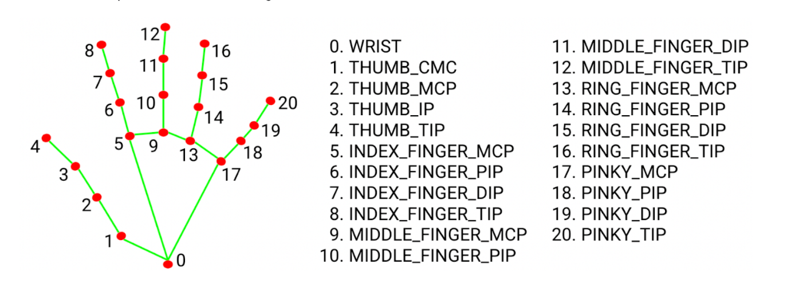
MediaPipe's hand tracking and gesture recognition showing joint mapping
Mediapipe's Handtracking and Gesture Recognition provides a lot of built-in capabilities. Running just the starter code allows you to see the above joints mapped to your hand on the webcam, in real-time. There is a set of built-in recognized gestures, such as "thumbs up", "i love you" (from American Sign Language), and "open palm".
For our scheme, however, we had to custom implement more gestures, and also add code to recognize handedness–whether the user was holding up their left or right hand. This ended up drastically increasing the amount of delay in gesture recognition–something we were unable to solve.
While users didn't verbally express dissatisfaction with the current hand gesture controls, we realized a single-hand model would indirectly reduce cognitive load, by reducing latency.
Reevaluating…our evaluation
One quote in particular that stuck with us after seeing our disappointing results was:
"I definitely prefer the keys, because I'm already used to playing video games with that exact same set of key binds and because it's almost muscle memory for me."
See, our initial goal for this assignment was to replace keyboard inputs with hand-gesture inputs. And we had achieved this–however, clearly the results did not show that hand-gesture inputs were any faster, or less mentally taxing to use. Essentially, we were stumped. We'd conducted research, and it had proved that our new system was inferior in almost every way to the original. What now?
We decided, instead, to shift our lens of analysis, as we had most likely been incorrectly evaluating our system. Keyboard inputs would always be more efficient–users have grown up with keyboards, there's inherent latency with gesture recognition (at least with the technology accessible to us), it takes more time to make a hand gesture than press a key, etc.
We decided our priority should instead be how effective and intuitive we could make the hand-gestures – and thus began to compare new revisions to our original scheme, rather than the keyboard inputs. Our new question was: given that a user wants to or must use gestural controls, how pleasant can we make that interaction?
Plan of Action
We decided to switch to a single-hand gesture scheme, to reduce latency and allow for more precise movement–in addition, we felt that the pointing for lateral movement would map to more intuitive controls, rather than holding up a closed fist.
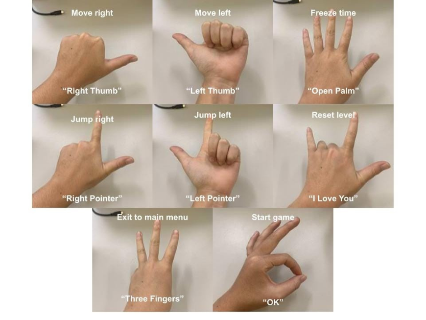
User Testing Part II
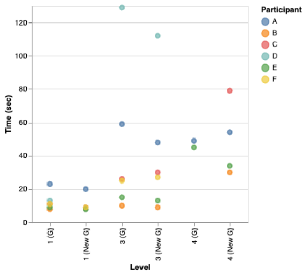
With some exceptions, the performance results showed a drastic improvement. More participants were able to complete the 4th level, whereas previously the majority failed to finish.
Overall, this new implementation solved nearly all issues with latency. Gesture recognition was much faster. In addition, players were much more successful in platforming—explaining the increase in number of players who could complete all levels.
The NASA-TLX scores also revealed large improvements. Frustration and mental load were the two subscales that decreased the most. Interestingly, physical load also decreased—most likely due to less physical movement needed to switch directions—simply a rotation of the wrist, rather than switching hands.
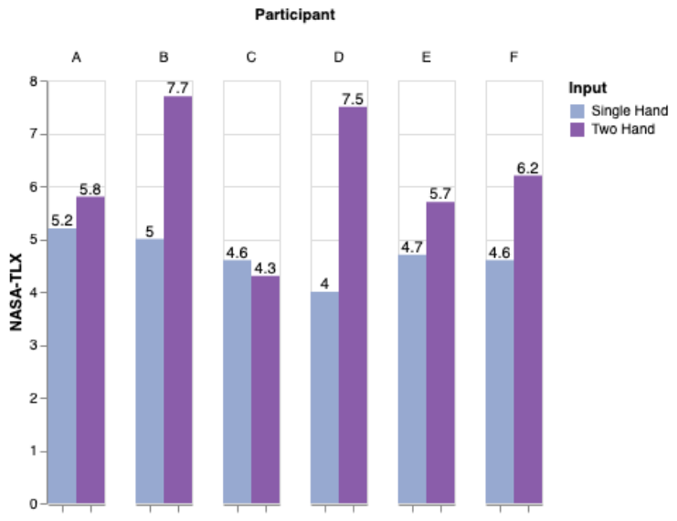
Interviews also reflected the quantitative results:
"Since there's [less] latency, I feel like I'm actually controlling the character [...] I feel like I picked up the controls faster because they responded more quickly"
"The reduced latency and new controls made me want to move around, to explore the level. Before, I was trying my best simply to not fail."
Going Forward
Technical Constraints Shape Design
We learned the hard way that design decisions often have to bend to the realities of implementation. MediaPipe's recognition speed and occlusion limitations forced us to pivot from a two-hand scheme to a more feasible one-hand design.
Evaluation Frameworks Matter
Choosing NASA-TLX gave us dimensional insight into users' experiences. It transformed vague feedback ("it's tiring") into measurable, actionable patterns of mental and physical workload.
The right metrics reveal the right problems.
Sometimes You Need to Reframe Success
Our initial goal was to beat keyboard controls. When that proved impossible, we pivoted to optimizing within the gesture space itself.
Knowing when to shift your comparison point is crucial.
Future Directions
Moving forward, in order to improve the experience of playing Time Freeze, or other similar web games, with hand gestures, we're interested in:
- Evaluating gestures in longer play sessions, to better understand fatigue and flow over time
- Experimenting more with custom gesture recognition, to allow more ambiguous gestures to be picked up–this could allow users to be "lazier", and thus make gestures without as much rigidity or strictness
- Exploring what games would be best suited to such hand gesture schemes, as we often felt like we were fighting against our goal in this design project
With that, here is a demo of our final implemented hand gesture controls: